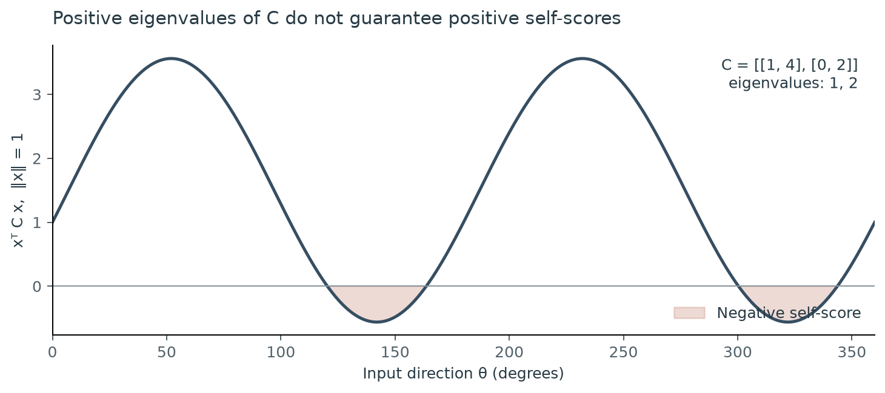
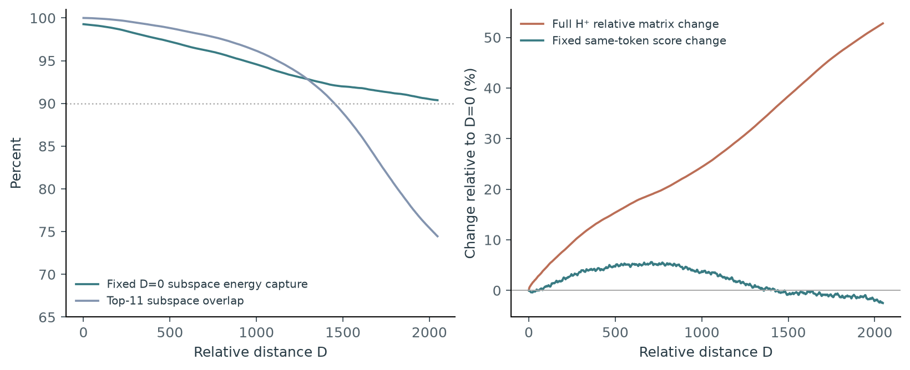
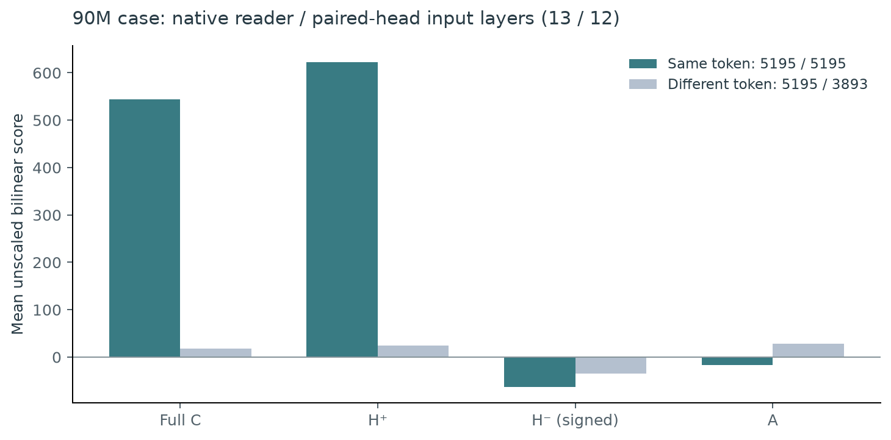
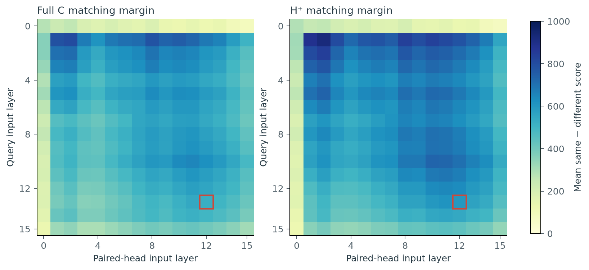
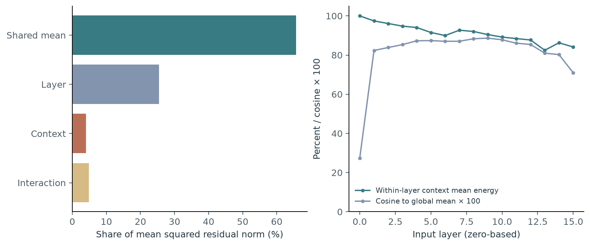

1. From prefix matching to a matrix question
An induction head implements a familiar pattern: [A][B] … [A] → [B]. A later attention head locates a position whose preceding token matches the current token, then copies information about the following token. In a two-head account, an earlier head supplies previous-token information to the key of a later reader.
Anthropic’s A Mathematical Framework for Transformer Circuits (2021) analyzed this interaction through K-composition. Positive eigenvalues of the effective matching matrix provided a useful heuristic for same-token matching. The paper also explicitly noted the limitation: nonorthogonal eigenvectors can invalidate a universal copying guarantee. [1]
In-context Learning and Induction Heads (2022) further examined eigenvalue-based diagnostics. In small attention-only models, an embedding-sandwiched, previous-token-attention-weighted K-composition trace correlated with measured prefix matching. These papers studied trained circuits; the initialization objective considered here is a subsequent research question. [2]
This post develops a symmetric spectral account of the same-input score, then asks whether its dominant positive directions also support matching between contextual representations of the same token. The algebra is exact; token selectivity and transfer across circuits require empirical evidence.
We use column vectors. Qr, Kr map residual space into reader head space, OwVw is the earlier head’s residual-space output map, and R(−D) is the relative RoPE rotation. In the empirical operator, the appropriate affine RMSNorm factors are included. This is one composition path, rather than the complete attention computation.
2. Why a positive spectrum is suggestive, but insufficient
For a real right eigenvector v with a positive eigenvalue, Cv = λv implies
This explains the intuition. However, a general nonsymmetric matrix need not have orthogonal eigenvectors. When an input combines several eigenvectors, cross terms can outweigh the positive diagonal terms.
For a concrete counterexample, take C = [[1, 4], [0, 2]]. Its eigenvalues are 1 and 2, with eigenvectors v1 = (1, 0)⊤ and v2 = (4, 1)⊤. Yet x = (1, −1)⊤ = 5v1 − v2 gives x⊤Cx = −1: the diagonal contributions sum to 59, while the cross term is −60.

Trace also has an average-case interpretation. If the input second moment is isotropic, E[xx⊤] = I, then E[x⊤Cx] = tr(C). For a general second-moment matrix M2, the expectation is tr(CM2). Thus a positive trace need not characterize every input direction, and the input distribution matters.
The symmetric part determines identical-vector scores
Write C = H + A, where
Because A⊤ = −A, the scalar x⊤Ax equals its transpose and also its own negative:
Consequently, x⊤Cx = x⊤Hx. The symmetric part, rather than the spectrum of the original nonsymmetric matrix, determines whether every identical-vector score is nonnegative.
Diagonalize H = UΛU⊤ in an orthonormal basis and separate its positive and signed negative parts:
Thus H+ is positive semidefinite. The score is strictly positive only when the input has a nonzero projection onto its positive eigenspace; inputs in its nullspace score zero.
3. How much of the operator is positive symmetric energy?
The three components are orthogonal under the Frobenius inner product. Symmetric and antisymmetric matrices are orthogonal, and H+H− = 0 because they occupy disjoint eigenspaces. Therefore,
We measure this decomposition in OLMo/DataDecide models across 14 parameter scales. For every included head, the analysis covers all integer distances D = 0, …, 2047. Within each scale, we average each component’s raw squared norm over distances, then over qualifying heads within a model, then equally over included models. We divide only after these averages:
This composition of mean raw energies differs from averaging per-distance energy fractions. Reader qualification requires both existing behavioral banks to exceed the selected threshold strictly. Models with no qualifying heads do not contribute zero-valued observations.

Numerical values by scale
| Scale | H⁺ (%) | H⁻ (%) | A (%) |
|---|---|---|---|
| 4M | NA | NA | NA |
| 6M | 53.46 | 14.32 | 32.22 |
| 8M | 58.50 | 9.28 | 32.22 |
| 10M | 59.11 | 11.52 | 29.37 |
| 14M | 65.58 | 7.06 | 27.36 |
| 16M | 65.67 | 6.41 | 27.92 |
| 20M | 65.18 | 6.48 | 28.34 |
| 60M | 67.50 | 4.87 | 27.64 |
| 90M | 73.96 | 2.51 | 23.53 |
| 150M | 74.80 | 2.06 | 23.14 |
| 300M | 72.98 | 2.71 | 24.31 |
| 530M | 67.39 | 4.02 | 28.59 |
| 750M | 64.33 | 5.05 | 30.62 |
| 1B | 60.19 | 6.35 | 33.46 |
For example, at 90M and the > 0.3 threshold, the positive symmetric, negative symmetric, and antisymmetric components account for 73.96%, 2.51%, and 23.53% of mean raw energy, respectively. The component balance varies across model scales.
A large F+ describes the matrix. It does not establish that a particular input lies in its dominant positive directions, that the full operator has positive self-scores everywhere, or that a matching token outranks competing tokens.
4. Concentration and RoPE geometry
Two structural questions motivate the next step: is the positive spectrum concentrated in relatively few directions, and do the images of those directions preferentially occupy slowly rotating RoPE planes?
Trace concentration and energy concentration are distinct
The existing concentration analysis selects the fewest leading positive eigenvectors accounting for 90% of positive trace:
A 90% squared-energy rank instead uses (λi+)2. The rank plotted here is the trace-based quantity; squared-energy retention is measured separately. Concentration identifies a compact subspace of the operator, while its relationship to token-identity information remains an empirical hypothesis.

At 90M and D = 127, the median per-model mean trace90 rank is 11.75 in a 528-dimensional residual space. The corresponding equal-model mean low-frequency image-energy shares are 97.75% on the query side and 96.75% on the key–output–value side. The trace-weighted directional low-frequency amplitude share is 97.68%.
RoPE frequencies belong to two-dimensional planes in head space. Residual-space eigenvectors are mapped there through the reader’s query map and the key–output–value composition. We call a plane low-frequency when its accumulated phase across the context is less than one full rotation: 2047ω < 2π. A residual coordinate index is not itself a RoPE-frequency label.
The Q and KOV image-energy shares treat the selected orthonormal eigenvectors equally; they do not weight those vectors by their eigenvalues. The directional amplitude statistic is separately trace-weighted.
Energy retention across distance does not imply invariant directions
For the 90M case below, the positive rank at D = 0 is 44, while its 90%-trace rank is 11. Let U0 contain those 11 leading directions. Across every integer distance, the fixed subspace captures at least 90.37% of squared H+ energy:
Nevertheless, the top-11 subspace’s mean squared principal-angle cosine falls to 0.7446 at D = 2047, and the largest principal angle reaches 79.38°. The full positive matrix changes by 52.77% in relative Frobenius norm. This example supports persistent energy concentration, while showing substantial directional and matrix drift.

Explore relative distance
Inspect the retained measurements for one fixed contextual token pair.
All integer distances are retained in the downloadable data.
5. From identical vectors to contextual token identity
Prefix matching is a ranking problem. For a query representation x, a same-identity candidate ysame should receive a higher score than competing identities. Positive self-scores alone do not guarantee this margin:
Even a positive-definite matrix can prefer a different unit vector: with H = diag(2, 1), x = (1, 1)/√2, and y = (2, 1)/√5, we have x⊤Hx = 1.5 < x⊤Hy = 5/√10 ≈ 1.581.
More fundamentally, the same token in different contexts or layers generally has different residual vectors. For x ≠ y, the antisymmetric contribution x⊤Ay need not vanish, and a positive-semidefinite matrix can have a negative cross-input score. The identical-vector proof therefore does not automatically extend to contextual identity matching.
An exploratory 90M case study
We analyze DataDecide-c4-90M at step 29,901, revision 2e612c115480fa22d56ab35f1b7468a686c32ad9. The selected reader is layer 13, head 8, with an existing reader strength of 0.89593. Its original paired earlier head is layer 12, head 7, with composition capture 0.83000. The earlier head’s existing writer label is 0; we therefore describe it as a paired head rather than a behaviorally verified previous-token writer.
The retained comparison uses token 5195 ( spread, including its leading space) as the target and token 3893 (\n ) as the alternative. Each token has 64 query-role contexts and 64 partner-role contexts at each of 16 input layers: 128 vectors per layer when pooled across roles, rather than 128 contexts for each role.
Inputs are stored RMSNorm-normalized residuals before affine scaling. The operator includes the affine factors. Scores use x⊤MDy, without additional unit normalization or division by √44. They are raw composition-path scores, not softmax probabilities or the complete attention logits.

| Component | Same token | Different token | Mean margin |
|---|---|---|---|
| Full C | 543.38 | 18.23 | 525.16 |
| H⁺ | 622.89 | 24.18 | 598.70 |
| H⁻ (signed) | −62.80 | −34.42 | −28.38 |
| A | −16.71 | 28.46 | −45.17 |
At the native layers, the full operator and H+ both favor the same token in every matched-context comparison in this finite grid. Across all 16 × 16 layer pairs, the positive component’s pooled means are 558.32 for the same token and 5.02 for the alternative; its matched-context winning fraction is 99.916%. All 256 layer pairs have a positive mean margin at every distance.

These results support strong pairwise discrimination in the selected example. They do not establish vocabulary-wide retrieval: only one alternative token is tested. Individual same-identity cross-input H+ scores can also be negative—the minimum over this grid is −15.43—which is consistent with positive semidefiniteness applying to identical-vector quadratic forms.
How stable are the retained token representations?
A descriptive layer–context decomposition for token 5195 gives xℓc = μ + aℓ + bc + εℓc. On the balanced grid, the global shared mean accounts for 65.62% of mean squared residual norm; layer, context, and interaction terms account for 25.45%, 4.04%, and 4.89%, respectively. The two context-bank means have cosine similarity 0.99928.

A shared mean is not a measurement of token-identity information, and generic residual anisotropy can contribute to it. The empirical covariance has no zero-variance linear direction at the reported numerical tolerance. Approximate representational stability therefore remains distinct from an exactly invariant token subspace.
6. Questions for a transferable initialization rule
The positive symmetric component supplies an exact nonnegativity guarantee for identical vectors. Its concentrated geometry and the contextual-token case study motivate a more specific hypothesis: a useful matching operator may align its dominant positive directions with token-identity structure that persists across contexts and layers.
Several questions remain:
- How does token-identity information evolve across layers, after separating identity, context, and shared anisotropy?
- Are the dominant positive subspaces shared across reader–paired-head compositions, or can distinct operators achieve similar matching through different bases?
- Can we identify persistent token-identity subspaces that generalize to held-out tokens, entire circuits, and model scales?
Answering these questions requires broader token comparisons, suitable hard negatives, and intervention-based tests. A transferable joint-matrix initialization rule must ultimately be tested in newly initialized models. The present evidence identifies candidate structure and a finite matching example; it does not yet validate that initialization rule.
Data, methods, and figure downloads
All empirical figures use existing retained analysis artifacts, frozen for this post. The all-distance energy section uses the available-model snapshot; the cross-scale concentration and frequency sections use the completed reference-distance cohort. The 90M sections use one selected operator and the finite populations described above. Layer and head indices are zero-based.
- All-distance raw-energy composition (CSV)
- Reference-distance concentration and frequency summaries (CSV)
- 90M layer-pair token scores (CSV)
- Every-distance H⁺ subspace measurements (CSV)
- Every-distance matrix and fixed-input scores (CSV)
- 90M experiment definitions and summary (JSON)
- Residual stability summary (JSON)
- Source filenames and SHA-256 provenance (JSON)
- All tables, figure data, and exportable figures (ZIP)
The downloadable data preserve raw precision. Displayed values are rounded. Source hashes bind the published extracts to their original artifacts; these figures do not pool model scales into a single headline statistic.
References
- Elhage et al. (2021). A Mathematical Framework for Transformer Circuits. See copying matrices and checking the mechanistic theory.
- Olsson et al. (2022). In-context Learning and Induction Heads. See QK eigenvalue trace and validation of the eigenvalue diagnostics.